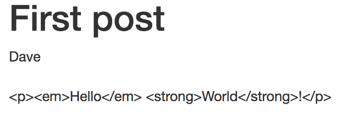
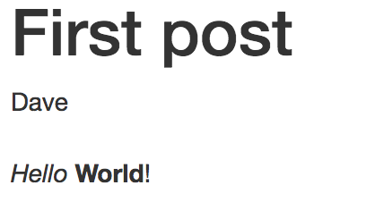

REFACTORING ELIXIR FOR MAINTAINABILITY By Dave Lucia Platform Architect @ SimpleBet @davydog187 When I was a beginner... I wrote modules and functions that leveraged pattern matching defmodule MyModule do def foo(binary) when is_binary(binary), do: String.upcase(binary) def foo(%MyStruct{} = struct), do: struct.message end But... When does Pattern Matching get in the way of good code? What patterns can reduce Code Duplication? Protocols and Behaviours - When are they useful? What will we do for the next 20 minutes? Consider when to Pattern Match Write some bad Elixir Code Make it better with Protocols Learn a bit about how Protocols work Make the code even better with Behaviours Who is this guy?? Currently Husband and Dog dad SimpleBet - Platform Software Architect - Elixir | Rust Formerly The Outline - Founding team member - Elixir | JavaScript Bloomberg - Senior Developer - JavaScript | C++ Pattern matching is defmodule Expng do def png_parse(<< 0x89, 0x50, 0x4E, 0x47, 0x0D, 0x0A, 0x1A, 0x0A, _length :: size(32), "IHDR", width :: size(32), height :: size(32), bit_depth, color_type, compression_method, filter_method, interlace_method, _crc :: size(32), chunks :: binary>>) do Source: https://zohaib.me/binary-pattern-matching-in-elixir/ Pattern matching can be a novelty def foo(%Post{comment: %Comment{author: %Author{favorite_pet: pet}), do: pet VS def foo(%Post{} = post), do: post.comment.author.favorite_pet Don't Pattern match in function heads To extract nested datastructures To guard against every possible type # This is overly defensive, this should be a programmer error def render_post(%Comment{} = _comment), do :error Do Pattern match in function heads when.. It makes API / Context boundaries explicit Matching on result types def foo({:ok, value}), do: value def foo({:error, reason}), do: reason Parsing binary values You've considered the tradeoffs Case Study Let's build a blog using Phoenix and Ecto Post Data Model defmodule Blog.Post do use Blog.Web, :model schema "posts" do field :title, :string field :author, :string field :body, :string end end Post Template <article> <header> <h1><%= @post.title %></h1> <address><%= @post.author %></address> </header> <section> <%= @post.body %> </section> </article> Blog Features Text Titles Paragraphs Links Images Bold / Italics Let's it up with some Markdown # Markdown time! *Hello* **World**! [Code BEAM SF](https://codesync.global/conferences/code-beam-sf-2019/) Expose a function to render Markdown in templates defmodule Blog.Web.PostView do use Blog.Web, :view def render_markdown(binary) do Blog.Markdown.to_html(binary) end end defmodule Blog.Markdown do def to_html(binary) when is_binary(binary) do Cmark.to_html(binary) end end Render the body as Markdown <section> <%# Convert the Markdown -> HTML %> <%= render_markdown @post.body %> </section> Our HTML is being escaped  Phoenix.render/3 returns a safe tuple? iex(2)> Phoenix.View.render(Blog.Web.PostView, "show.html", post: post) {:safe, [[[[[[["" | "<article>\n <header>\n <h1>"] | "First post"] | "</h1>\n <address>"] | "Dave"] | "</address>\n </header>\n <section>\n"] | "<p><em>Hello</em> <strong>World</strong>!</p>\n"] | " </section>\n</article>\n"]} We can see our escaped HTML "<p><em>Hello</em> <strong>World<" The safe tuple annotates that our template is safe and that we don't need to escape its contents because all data has already been encoded. Thanks for keeping us safe, Phoenix # Pseudo typespec @spec Phoenix.View.render(module(), binary(), term()) :: {:safe, list()} We need our Markdown rendered HTML to go from iodata {:safe, iodata} render_markdown/1 now marks the HTML as safe def render_markdown(binary) do binary |> Markdown.to_html() |> Phoenix.HTML.raw() # Convert to {:safe, iodata} tuple end  The Good We've built the world's simplest blog We can render Markdown in templates The Bad We need have to remember to use the render_markdown/1 function for any field we want to support Markdown <article> <header> <h1><%= render_markdown(@post.title) %></h1> <h2><%= render_markdown(@post.dek) %></h2> <address><%= @post.author %></address> <date><%= @post.published_at %></date> </header> <section> <%= render_markdown(@post.body) %> </section> <footer><%= render_markdown(@post.footer)</footer> </article> We're here to Refactor for Maintainability Let's refactor by leveraging Protocols Protocols help you achieve the Open/Closed Principle in Elixir Open for extension Closed for modification Protocols are a mechanism to achieve polymorphism in Elixir. Dispatching on a protocol is available to any data type as long as it implements the protocol. - Elixir Protocol Guide defprotocol Size do @doc "Calculates the size (and not the length!) of a data structure" def size(data) end defimpl Size, for: BitString do def size(string), do: byte_size(string) end defimpl Size, for: Map do def size(map), do: map_size(map) end defimpl Size, for: Tuple do def size(tuple), do: tuple_size(tuple) end defprotocol Size do @doc "Calculates the size (and not the length!) of a data structure" def size(string) when is_binary(string), do: byte_size(string) def size(map) when is_map(map), do: map_size(map) def size(tuple) when is_tupe(tuple), do: tuple_size(tuple) end We can extend the rendering power of Phoenix by leveraging its Phoenix.HTML.Safe Protocol defmodule Blog.Markdown do defstruct text: "" def to_html(%__MODULE__{text: text}) when is_binary(text) do Cmark.to_html(binary) end defimpl Phoenix.HTML.Safe do # Implement the protocol def to_iodata(%Blog.Markdown{} = markdown) do Blog.Markdown.to_html(markdown) end end end post = put_in(post.body, Markdown.new(post.body)) Phoenix.View.render( Blog.Web.PostView, "show.html", post: post ) <article> <header> <h1><%= @post.title %></h1> <address><%= @post.author %></address> </header> <section> <%# render_markdown(@post.body) %> <%= @post.body %> </section> </article> But wait, we can do better We still need to remember to wrap in a Markdown struct post = put_in(post.body, Markdown.new(post.body)) How can we refactor further? Behaviours Behaviours are interfaces def Food do @callback is_hotdog?(any()) :: boolean() end def Hotdog do defstruct [:val] @behaviour Food def is_hotdog?(%Hotdog{}), do: true end Lets make %Markdown{} implement the Ecto.Type Behaviour defmodule Blog.Post do use Blog.Web, :model schema "posts" do field :title, :string field :author, :string field :body, Blog.Markdown # The custom Ecto.Type end end defmodule Blog.Markdown do @behaviour Ecto.Type def type, do: :string def cast(binary) when is_binary(binary) do {:ok, %Markdown{text: binary}} end def load(binary) when is_binary(binary) do {:ok, %Markdown{text: binary}} end def dump(%Markdown{text: binary}) when is_binary(binary) do {:ok, binary} end end Now Post.body is always a %Markdown{} post = Repo.get!(Post, 1) true = match?(%Markdown{}, post.body) # No longer needed # post = put_in(post.body, Markdown.new(post.body)) Phoenix.View.render( Blog.Web.PostView, "show.html", post: post ) What have we learned? TODO this slide sucks Pattern matching is great, but don't overuse it Protocols can make function calls implicit Behaviours can be leveraged to plug into existing systems For more info, read my blog post: Beyond functions in Elixir: Refactoring for Maintainability Presentation written in the Marp framework by Yuki Hattori, a Markdown based presentation framework. Marp - https://yhatt.github.io/marp/ Presentation - https://github.com/davydog187/code_beam_presentation Thanks! By Dave Lucia Platform Architect @ SimpleBet @davydog187